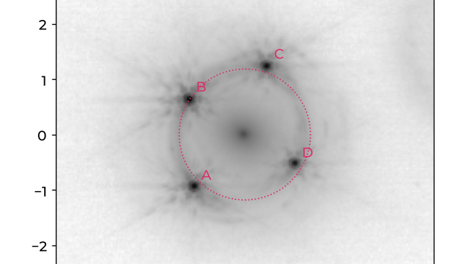
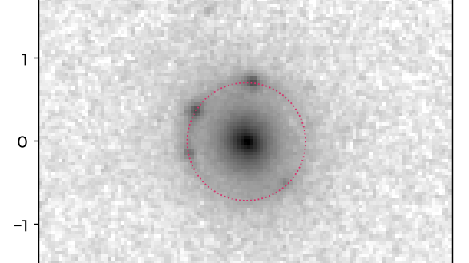

Tutorials
Two real lenses, from the raw image to a model you can judge. Pick the kind of lens you work on; both follow the same steps, so you can read the other one afterwards for the differences.

Lensed quasar · JWST/NIRCam F150W
HE0435−1223
Four quasar images, a lensed host ring, five perturbers, time delays. PSF from stars, the
PSF-error term, blinding.

Galaxy–galaxy · HST/ACS F814W
COSMOS 5921+0638
A compact elliptical with an Einstein ring, from public archive data. Building every input
yourself: noise, masks, a PSF from stars, the θE prior.
Before you startWhat you need
- ALPACA installed (installation);
alpaca-deviceshows your device; - about an hour; the runs take minutes (a quick look on a laptop) to hours (a production budget);
- no prior knowledge of ALPACA; some lensing background helps.
Prefer to let an AI assistant drive?
The repository's llm/ folder has instruction files for Claude Code, Codex or the Gemini CLI. The
assistant sets up the environment, prepares your data and starts a first model with you (see the
AI-assisted workflow). The tutorials explain what it does and why.